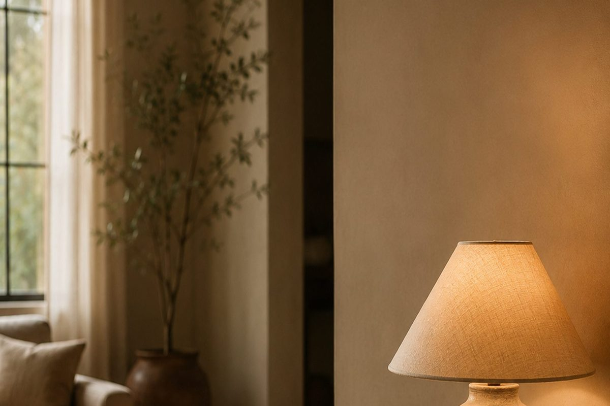
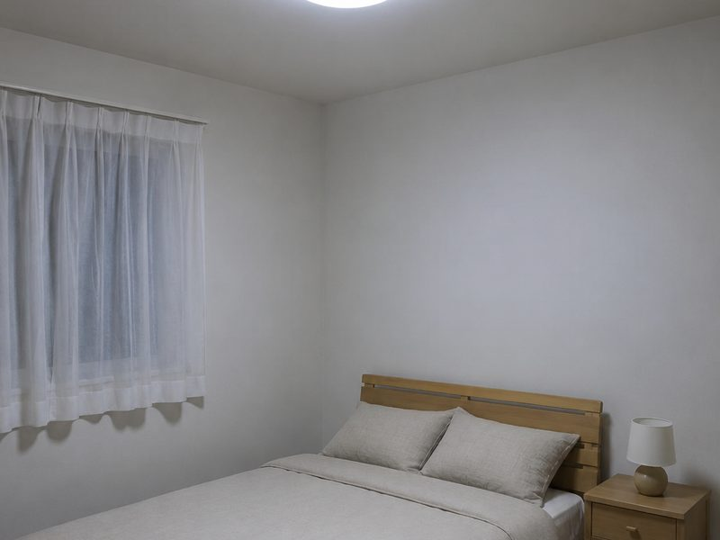
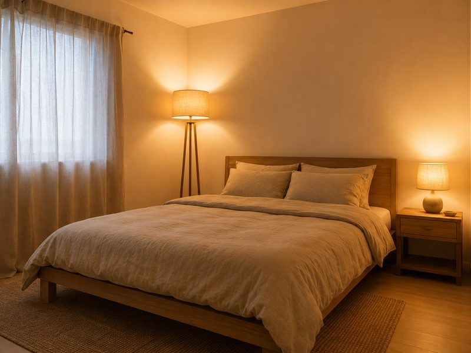
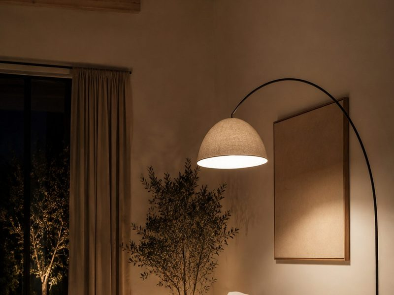
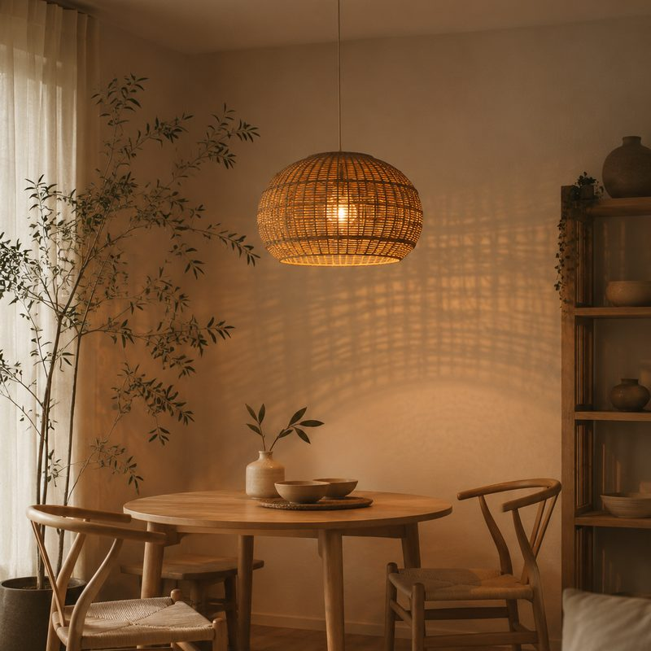
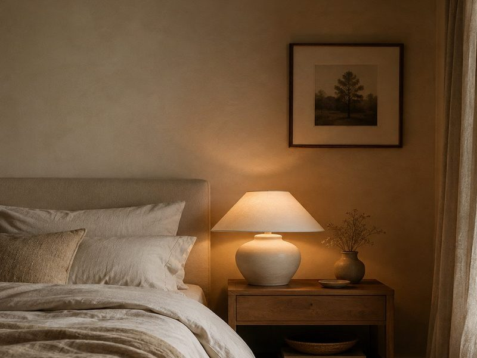
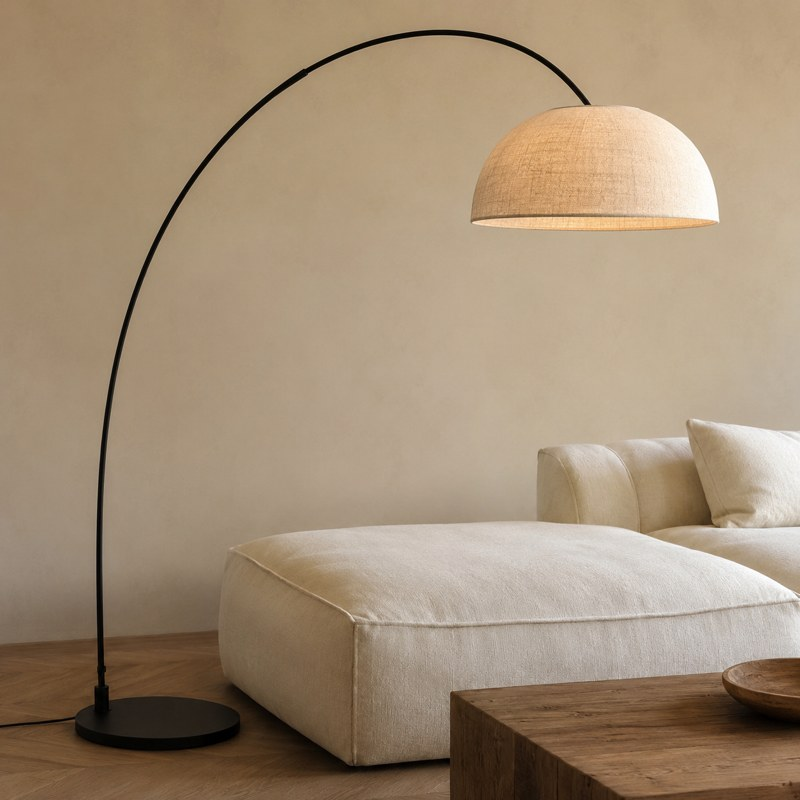

Most small bedrooms have exactly one light: in the middle of the ceiling, pointing down. That one light can make a bigger difference than the wall colour, the bed size, or the amount of stuff in the room.
As an Amazon Associate I earn from qualifying purchases. Links below are affiliate links (#ad) - they cost you nothing extra. Nothing here is a paid placement, and no brand sees this page before it goes up.
A ceiling light puts the brightest point in the centre and lets the corners fall dark. Your eye can read those darker edges as the boundary of the room, so the space feels smaller than it measures.
Lamps do the opposite. Light near the walls makes the edges feel less heavy, so the room reads wider. It is why a hotel room with five small lamps feels generous and your bedroom with one bright one does not.


Low and beside the bed. A shaded lamp at mattress height, not above your shoulder. Anything higher shines into your eyes when you sit up, which is why you stop using it after a week.
Standing height, across the room. A floor lamp in the far corner. This is the one everyone skips, and it is the one that stretches the room - it lights the wall you are looking at, not the one you are sitting against.
Something overhead that is not flat. If you keep a ceiling fixture, use a shade that throws pattern instead of a flat disc of light.

Bulb colour: around 2700K. Cooler light tends to feel functional rather than restful, so warmer suits a bedroom. It is printed on the box, and it is the easiest thing to get wrong.
Shade material. Opaque shades make a pool of light; woven and fabric shades spread it. In a small room you want spread.
Cord length. Measure from the socket to where the lamp will actually stand, not to the wall. A few extra inches saves an awkward return.
Base width: under 15cm for a small nightstand, or the lamp takes the whole surface and you have lost the table.

Our illustration of the look - not the product photoA ceiling light that does not look like a ceiling light. The woven shade throws a soft pattern onto the wall instead of one flat pool of light, which is the cheapest way to stop a rented room reading as a rented room. Hang it lower than feels right - around 150cm off the floor beside a bed, not centred at ceiling height.
Best for: renters who cannot change the fitting but can swap the shade
See it →paid link
Our illustration of the look - not the product photoThe bedside one. Off-white ceramic disappears into a warm wall, which is the point - the lamp should not be the thing you notice. Glossy black and chrome break a one-colour room. Check the shade is fabric, not plastic.
Best for: a small nightstand where the lamp cannot take the whole surface
See it on Amazon →paid link
Our illustration of the look - not the product photoThe one that stands in for a ceiling light. The arm reaches out over the seat or the bed, so the light lands where a pendant would without anyone touching the wiring - which is the whole problem in a rented room. It needs floor space behind the furniture, so measure that before the height.
Best for: a rented room where the ceiling fitting cannot be changed
See it on Amazon →paid linkPut a floor lamp in the far corner. It is the cheapest change on this page and the only one that changes how big the room feels rather than how nice it looks. Everything else is refinement.
We look for pieces that change how a small room works, not the cheapest option and not the most photographed one. Everything here has to survive a rental: no drilling, no permanent fittings, nothing that needs a second person to install.
Room images on this site are our own illustrations, not photographs of the products. We link to the retailer so you can see the real item.
Written and selected by Rooms and Roads · Updated August 2026 · links checked August 2026